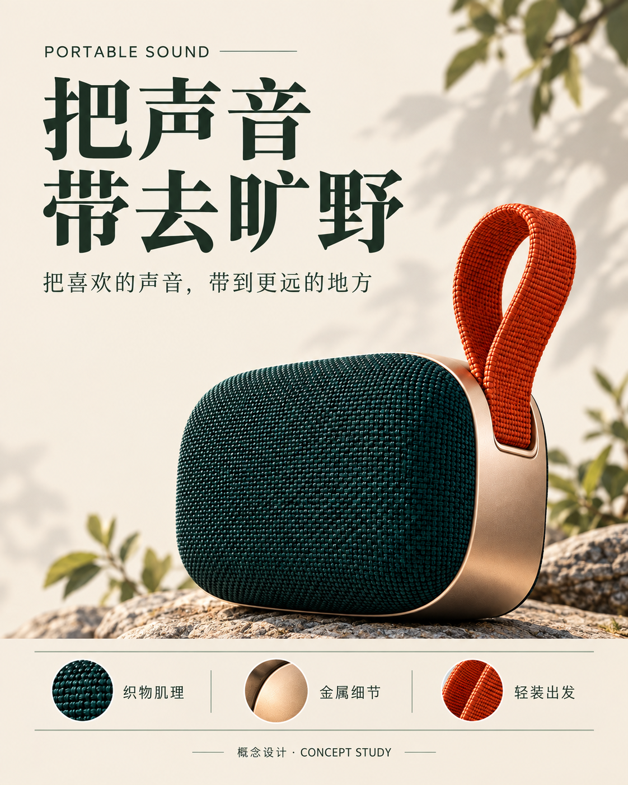

edit-target · attach
Existing speaker visual
Reference target · source target · Actual full image or recorded source extraction

SHA256
7d85abcd537e1f3294e243be10eb05f1912ad269209914cad8ce29b0be557338- Author declared inspection
- Inspected thick rounded woven face, champagne side shell and tall orange woven loop; original page has Chinese copy.
- Intended use
- Keep product identity and materials; replace the entire copy with the new English inventory.
- Target preview: preserve
- Same recognizable speaker body, woven front, metal side, orange loop and material closeups. Keep opaque background. Original Chinese words are explicitly replaced.
Author/model observations and adaptations
imagery · identity
- Finding (author supplied)
- Woven face, metal side and orange loop jointly identify this object.
- Apply to target (author supplied)
- Retain those shapes and relative volumes while replacing typography.